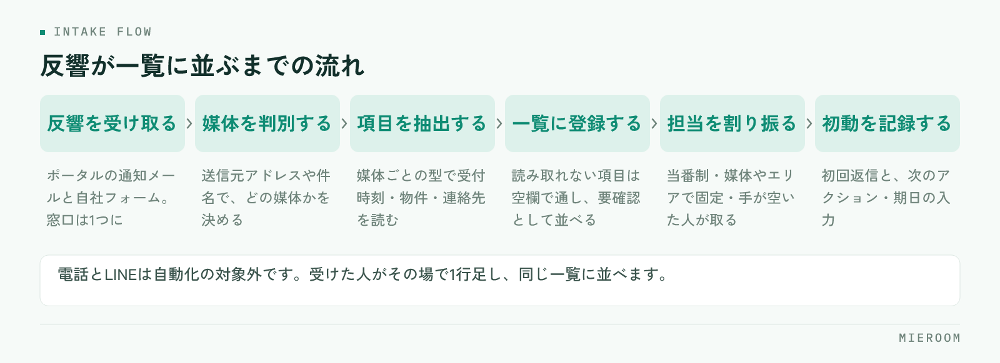

ポータルからの反響メールを、管理表に手で打ち直している店舗は少なくありません。この転記は、時間を取られるだけでなく、初動の遅れと入力の抜けを同時に生みます。自動で取り込む仕組みを作れば、反響が届いた時点で一覧に並び、担当を割り振るところから始められます。
この記事の結論
反響メールの自動取込は、受信・判別・項目の抽出・一覧への登録・担当の割り振りという流れで動きます。導入時の要は取り込む項目を先に決めることで、ここが曖昧だと自動化しても手直しが残ります。
反響の転記が、遅れと漏れを生む理由
転記そのものは1件あたり数分の作業です。問題は、その数分がいつ発生するかを店舗側で選べないことにあります。
反響は来店対応中にも、内見の移動中にも届きます。手で入力する運用だと、「あとでまとめて入れる」が常態化し、そのあいだ反響は誰の目にも触れません。一覧に載っていない反響は、店長からも他のスタッフからも見えないため、担当を割り振ることもできません。
抜けも起きます。急いで打ち込めば物件名や希望条件が省略され、あとから見た人が判断できない行が残ります。媒体欄が空のまま進めば、どの媒体からの反響だったかを後で数えられません。
- 転記までの空白時間に、他社が先に返信している
- 個人の受信トレイにだけ残り、休みの日に誰も気づかない
- 入力項目が人によって違い、表記が割れる
- 同じ反響を二人が入力して重複する
いずれも担当者の注意力の問題ではなく、手作業を前提にした運用の構造から生まれます。初動の速さが結果に効く理由は反響の初動5分で扱っています。
自動取込の仕組みは、2つの入口で考える
反響の入口は、大きくメールとフォームの2つに分かれます。仕組みとしては別物なので、分けて設計します。

メール経由は、ポータルサイトから届く反響通知メールを受け取り、本文から必要な項目を読み取って一覧に登録する方式です。専用の受信アドレスを用意し、各ポータルの通知先をそこへ向けます。個人のアドレスに届けたままにせず、店舗として受ける窓口を1つ作るのが前提になります。
フォーム経由は、自社サイトの問い合わせフォームから送信された内容を、そのまま管理表へ渡す方式です。項目が最初から決まっているため、メールより確実に取り込めます。自社サイトを持っているなら、こちらから整えるほうが早く効果が出ます。
電話とLINEは自動化の対象外です。受けた人がその場で1行足す運用に統一し、入口ごとの方式は違っても、並ぶ場所は同じ一覧にすることが重要です。
取り込む項目を先に決める
自動化の成否は、何を取り込むかを先に決められるかで決まります。後から足すと、それ以前の反響と比較できなくなるためです。最低限、次の項目を揃えます。
- 受付日時：日付だけでなく時刻まで。初動の速さを後から測るために必要です
- 媒体：どのポータル・どのフォームから来たか。選択肢にして表記を固定します
- 反響の種類：物件問い合わせ・来店予約・資料請求などの区分
- 問い合わせ物件：物件名と部屋番号。ここが空だと折り返しの一言目が作れません
- 顧客の連絡先：氏名と、連絡がつく手段（電話・メール）
- 希望条件：メール本文に含まれていれば、エリア・賃料・間取り・入居時期
- 担当者：取り込み時点では空でも、割り振りの直後に必ず埋める
- 次のアクションと期日：自動では埋まりません。初動の直後に人が入れます
最後の2つは自動では決まらない項目ですが、列として用意しておかないと運用が止まります。取り込みはあくまで入口で、そこから先の管理は人が回すという前提で設計してください。記録項目の全体像は賃貸仲介の反響管理の方法にまとめています。
媒体ごとに形式が違う問題への対処
自動取込でつまずきやすいのが、ポータルごとにメールの書式が違う点です。項目名の呼び方も、並び順も、含まれる情報の量も揃っていません。
対処は3段階で考えます。まず、媒体ごとに読み取りの型を用意すること。送信元アドレスや件名で媒体を判別し、その媒体用の型で本文を読み取ります。1つの型ですべてを処理しようとすると、どこかで必ず崩れます。
次に、取り込めなかった項目を空欄のまま通すこと。読み取りに失敗した項目があるからといって、反響そのものを取りこぼしては本末転倒です。氏名と連絡先さえ入っていれば、残りは人が足せます。
最後に、読み取りに失敗した反響を一覧の上に出すこと。エラーとして別の場所に隠すのではなく、「要確認」として通常の一覧に並べます。別の画面に置くと、見に行く人がいなくなります。
ポータル側が通知メールの書式を変えることもあります。取り込みが急に崩れたときのために、元のメールを残しておく運用にしておくと、後から手で補えます。
取り込んだあと、初動までをつなぐ
自動取込は、反響が一覧に並ぶところまでを担います。そこから先の初動は、割り振りの決め方で速さが変わります。
割り振りの方式は、店舗の体制に合わせて選びます。どれを選んでも構いませんが、決めていない状態だけは避けてください。
| 割り振りの方式 | 向いている店舗 | 注意点 |
|---|---|---|
| 当番制（時間帯で担当を固定） | スタッフが複数いる店舗 | 当番の引き継ぎ時刻を明確に決める |
| 媒体・エリアで固定 | 担当エリアが分かれている店舗 | 担当が不在の時間帯の代理を決めておく |
| 手が空いた人が取る | 少人数・一人運営 | 誰も取らない反響が出ないよう、残件を毎日見る |
割り振りと同時にやることは2つです。初回の返信と、次のアクション・期日の記録。この2つが済めば、その反響は止まりません。取り込みが自動でも、この2つは人の仕事として残ります。
自動追客の機能を併用する場合も、一次対応を機械に任せきりにはしないでください。定型の初回返信と、担当者の個別対応は役割が違います。
導入前に確かめておくこと
仕組みを入れる前に、店舗側で決めておくべきことがあります。ここが済んでいないと、導入後に運用が固まりません。
- 反響の入口をすべて書き出す（ポータル、自社フォーム、電話、LINE、紹介、直来店）
- 通知メールの届け先を、個人アドレスから店舗の窓口へ切り替えられるか確認する
- 取り込む項目を決め、媒体と反響種別の選択肢を確定させる
- 割り振りの方式と、営業時間外に届いた分を誰がいつ拾うかを決める
- 重複した反響をどう扱うか決める（同じ人からの再問い合わせは1件にまとめるか、別件として持つか）
- 過去の反響データを移すかどうかを決める
- 取り込みが失敗したときに誰が気づくかを決める
すべての項目を完璧に取り込もうとすると、導入が止まります。まずは受付日時・媒体・物件・顧客の連絡先の4つが自動で入る状態を作り、残りは運用しながら足すほうが早く回り始めます。
媒体ごとの成績を後から比べたい場合は、媒体欄の精度が要になります。数え方は媒体別ROIをどう出すかを参照してください。
ポータルのメール書式が変わったら、取り込みは止まりますか？
電話やLINEの反響も自動で取り込めますか？
いま使っているExcelの反響管理表は捨てることになりますか？
まとめ：転記をやめると、反響管理が回り始める
ポータルの反響メールの自動取込は、受信・媒体の判別・項目の抽出・一覧への登録・担当の割り振りという流れで動きます。仕組みを入れる前に取り込む項目を決め、媒体ごとに読み取りの型を持ち、失敗した反響は隠さず一覧に出す。この3点を押さえれば、転記に使っていた時間はそのまま初動に回せます。自動化の目的は入力の手間を減らすことではなく、反響が見える状態を切らさないことです。
ミエルームは、この流れをそのまま画面にした賃貸仲介向けの業務管理SaaSです。フォームとメールからの反響を自動で取り込んで一覧に並べ、担当と次のアクションを持たせたまま、接客・申込・売上まで同じ案件として追えます。反響分析やLINE・SMSの自動追客、Excelデータのインポートと初期設定の代行にも対応し、最短で即日から使い始められます。いまの管理表を置き換えられるか確かめたい方には、デモアカウントをご用意しますのでお気軽にご相談ください。